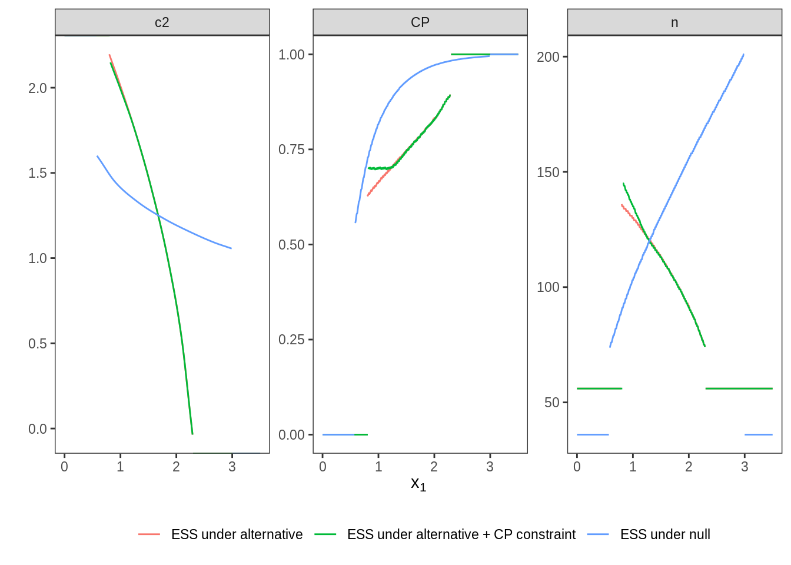

2 Scenario I: large effect, point prior
2.1 Details
In this scenario, a classical two-arm trial with normal test statistic and known variance (w.l.o.g. variance of the test statistic is 1). This situation corresponds to a classical \(z\)-test for a difference in population means. The null hypothesis is no population mean difference, i.e. \(\mathcal{H}_0:\delta \leq 0\). An alternative effect size of \(\delta = 0.4\) with point prior distribution is assumed. Across all variants in this scenario, the one-sided maximal type one error rate is restricted to \(\alpha=0.025\) and the power at the point alternative of \(\delta=0.4\) must be at least \(0.8\).
2.2 Variant I-1: Minimizing Expected Sample Size under Point Prior
2.2.1 Objective
Firstly, expected sample size under the alternative (point prior) is minimized, i.e., \(\boldsymbol{E}\big[n(\mathcal{D})\big]\).
2.2.2 Constraints
No additional constraints besides type one error rate and power are considered in this variant.
2.2.3 Initial Designs
For this example, the optimal one-stage, group-sequential, and generic
two-stage designs are computed.
The initial design for the one-stage case is determined heuristically
(cf. Scenario III where another initial design is applied
on the same situation for stability of initial values).
Both the group sequential and the generic two-stage designs are
optimized starting from the corresponding group-sequential design as
computed by the rpact package.
order <- 7L
# data frame of initial designs
tbl_designs <- tibble(
type = c("one-stage", "group-sequential", "two-stage"),
initial = list(
OneStageDesign(200, 2.0),
rpact_design(0.4, 0.025, 0.8, TRUE, order),
TwoStageDesign(rpact_design(0.4, 0.025, 0.8, TRUE, order))) )The order of integration is set to 7.
2.2.4 Optimization
2.2.5 Test Cases
To avoid improper solutions, it is first verified that the maximum number of iterations was not exceeded in any of the three cases.
tbl_designs %>%
transmute(
type,
iterations = purrr::map_int(tbl_designs$optimal,
~.$nloptr_return$iterations) ) %>%
{print(.); .} %>%
{testthat::expect_true(all(.$iterations < opts$maxeval))}## # A tibble: 3 x 2
## type iterations
## <chr> <int>
## 1 one-stage 24
## 2 group-sequential 1447
## 3 two-stage 4157Next, the type one error rate and power constraints are verified for all three designs by simulation:
tbl_designs %>%
transmute(
type,
toer = purrr::map(tbl_designs$optimal,
~sim_pr_reject(.[[1]], .0, datadist)$prob),
power = purrr::map(tbl_designs$optimal,
~sim_pr_reject(.[[1]], .4, datadist)$prob) ) %>%
unnest(., cols = c(toer, power)) %>%
{print(.); .} %>% {
testthat::expect_true(all(.$toer <= alpha * (1 + tol)))
testthat::expect_true(all(.$power >= min_power * (1 - tol))) }## # A tibble: 3 x 3
## type toer power
## <chr> <dbl> <dbl>
## 1 one-stage 0.0251 0.799
## 2 group-sequential 0.0250 0.800
## 3 two-stage 0.0250 0.799The \(n_2\) function of the optimal two-stage design is expected to be monotonously decreasing:
expect_true(
all(diff(
# get optimal two-stage design n2 pivots
tbl_designs %>% filter(type == "two-stage") %>%
{.[["optimal"]][[1]]$design@n2_pivots}
) < 0) )Since the degrees of freedom of the three design classes are ordered as
‘two-stage’ > ‘group-sequential’ > ‘one-stage’,
the expected sample sizes (under the alternative) should be ordered
in reverse (‘two-stage’ smallest).
Additionally, expected sample sizes under both null and alternative
are computed both via evaluate() and simulation-based.
ess0 <- ExpectedSampleSize(datadist, H_0)
tbl_designs %>%
mutate(
ess = map_dbl(optimal,
~evaluate(ess, .$design) ),
ess_sim = map_dbl(optimal,
~sim_n(.$design, .4, datadist)$n ),
ess0 = map_dbl(optimal,
~evaluate(ess0, .$design) ),
ess0_sim = map_dbl(optimal,
~sim_n(.$design, .0, datadist)$n ) ) %>%
{print(.); .} %>% {
# sim/evaluate same under alternative?
testthat::expect_equal(.$ess, .$ess_sim,
tolerance = tol_n,
scale = 1)
# sim/evaluate same under null?
testthat::expect_equal(.$ess0, .$ess0_sim,
tolerance = tol_n,
scale = 1)
# monotonicity with respect to degrees of freedom
testthat::expect_true(all(diff(.$ess) < 0)) }## # A tibble: 3 x 7
## type initial optimal ess ess_sim ess0 ess0_sim
## <chr> <list> <list> <dbl> <dbl> <dbl> <dbl>
## 1 one-stage <OnStgDsg> <adptrOpR> 98 98 98 98
## 2 group-sequential <GrpSqntD> <adptrOpR> 80.9 80.9 68.5 68.5
## 3 two-stage <TwStgDsg> <adptrOpR> 79.7 79.7 68.9 68.9The expected sample size under the alternative must be lower or equal than
the expected sample size of the inital rpact group-sequential design that
is based on the inverse normal combination test.
2.3 Variant I-2: Minimizing Expected Sample Size under Null Hypothesis
2.3.1 Objective
Expected sample size under the null hypothesis prior is minimized,
i.e., ess0.
2.3.2 Constraints
The constraints remain unchanged from the base case.
2.3.3 Initial Design
Since optimization under the null favours an entirely different
(monotonically increasing) sample size function,
and thus also a different shape of the \(c_2\) function,
the rpact initial design is a suboptimal starting point.
Instead, we start with a constant \(c_2\) function by heuristically
setting it to \(2\) on the continuation area.
Also, optimizing under the null favours extremely conservative
boundaries for early efficacy stopping and we thus impose as fairly
liberal upper bound of \(3\) for early efficacy stopping.
2.3.4 Optimization
The optimal two-stage design is computed.
2.3.5 Test Cases
Make sure that the optimization algorithm converged within the set maximum number of iterations:
## [1] 18911The \(n_2\) function of the optimal two-stage design is expected to be monotonously increasing.
Next, the type one error rate and power constraints are tested.
tbl_performance <- tibble(
delta = c(.0, .4) ) %>%
mutate(
power = map(
delta,
~evaluate(
Power(datadist, PointMassPrior(., 1)),
opt_h0$design) ),
power_sim = map(
delta,
~sim_pr_reject(opt_h0$design, ., datadist)$prob),
ess = map(
delta,
~evaluate(ExpectedSampleSize(
datadist,
PointMassPrior(., 1) ),
opt_h0$design) ),
ess_sim = map(
delta,
~sim_n(opt_h0$design, . ,datadist)$n ) ) %>%
unnest(., cols = c(power, power_sim, ess, ess_sim))
print(tbl_performance)## # A tibble: 2 x 5
## delta power power_sim ess ess_sim
## <dbl> <dbl> <dbl> <dbl> <dbl>
## 1 0 0.0250 0.0250 57.2 57.3
## 2 0.4 0.802 0.802 118. 118.testthat::expect_lte(
tbl_performance %>% filter(delta == 0) %>% pull(power_sim),
alpha * (1 + tol) )
testthat::expect_gte(
tbl_performance %>% filter(delta == 0.4) %>% pull(power_sim),
min_power * (1 - tol) )
# make sure that evaluate() leads to same results
testthat::expect_equal(
tbl_performance$power, tbl_performance$power_sim,
tol = tol,
scale = 1 )
testthat::expect_equal(
tbl_performance$ess, tbl_performance$ess_sim,
tol = tol_n,
scale = 1 )The expected sample size under the null must be lower or equal than
the expected sample size of the inital rpact group-sequential design.
2.4 Variant I-3: Conditional Power Constraint
2.4.1 Objective
Same as in I-1, i.e., expected sample size under the alternative point prior is minimized.
2.4.2 Constraints
Besides the previous global type one error rate and power constraints, an additional constraint on conditional power is imposed.
2.4.3 Initial Design
The same initial (generic two-stage) design as in I-1 is used.
2.4.4 Optimization
2.4.5 Test Cases
Check if the optimization algorithm converged.
## [1] 4591Check constraints.
tbl_performance <- tibble(
delta = c(.0, .4) ) %>%
mutate(
power = map(
delta,
~evaluate(
Power(datadist, PointMassPrior(., 1)),
opt_cp$design) ),
power_sim = map(
delta,
~sim_pr_reject(opt_cp$design, ., datadist)$prob),
ess = map(
delta,
~evaluate(ExpectedSampleSize(
datadist,
PointMassPrior(., 1) ),
opt_cp$design) ),
ess_sim = map(
delta,
~sim_n(opt_cp$design, . ,datadist)$n ) ) %>%
unnest(., cols = c(power, power_sim, ess, ess_sim))
print(tbl_performance)## # A tibble: 2 x 5
## delta power power_sim ess ess_sim
## <dbl> <dbl> <dbl> <dbl> <dbl>
## 1 0 0.0250 0.0250 68.9 69.0
## 2 0.4 0.799 0.799 79.8 79.8testthat::expect_lte(
tbl_performance %>% filter(delta == 0) %>% pull(power_sim),
alpha * (1 + tol) )
testthat::expect_gte(
tbl_performance %>% filter(delta == 0.4) %>% pull(power_sim),
min_power * (1 - tol) )
# make sure that evaluate() leads to same results
testthat::expect_equal(
tbl_performance$power, tbl_performance$power_sim,
tol = tol,
scale = 1 )
testthat::expect_equal(
tbl_performance$ess, tbl_performance$ess_sim,
tol = tol_n,
scale = 1 )The conditional power constraint is evaluated and tested on a grid over the continuation region (both simulated an via numerical integration).
tibble(
x1 = seq(opt_cp$design@c1f, opt_cp$design@c1e, length.out = 25),
cp = map_dbl(x1, ~evaluate(cp, opt_cp$design, .)),
cp_sim = map_dbl(x1, function(x1) {
x2 <- simulate(datadist, 10^6, n2(opt_cp$design, x1), .4, 42)
rej <- ifelse(x2 > c2(opt_cp$design, x1), 1, 0)
return(mean(rej))
}) ) %>%
{print(.); .} %>% {
testthat::expect_true(all(.$cp >= 0.7 * (1 - tol)))
testthat::expect_true(all(.$cp_sim >= 0.7 * (1 - tol)))
testthat::expect_true(all(abs(.$cp - .$cp_sim) <= tol)) }## # A tibble: 25 x 3
## x1 cp cp_sim
## <dbl> <dbl> <dbl>
## 1 0.810 0.701 0.701
## 2 0.872 0.698 0.699
## 3 0.934 0.701 0.701
## 4 0.995 0.698 0.698
## 5 1.06 0.700 0.700
## 6 1.12 0.702 0.703
## 7 1.18 0.699 0.699
## 8 1.24 0.703 0.703
## 9 1.30 0.713 0.713
## 10 1.37 0.718 0.718
## # … with 15 more rowsFinally, the expected sample size under the alternative prior should be larger than in the case without the constraint I-1.
2.5 Plot Two-Stage Designs
The following figure shows the three optimal two-stage designs side by side. The effect of the conditional power constraint (CP not below 0.7) is clearly visible and the very different characteristics between optimizing under the null or the alternative are clearly visible.
